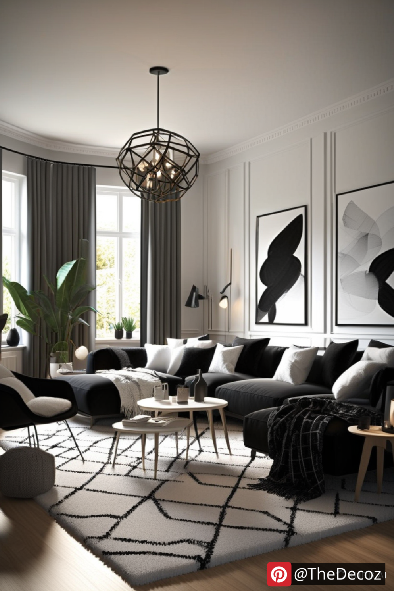
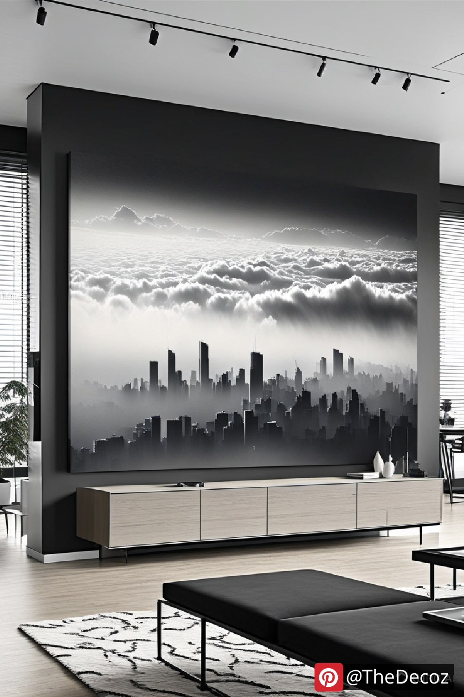
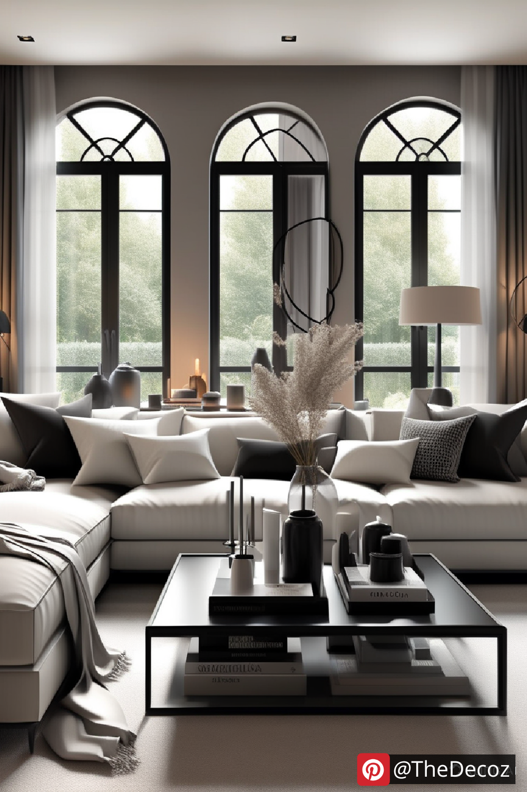
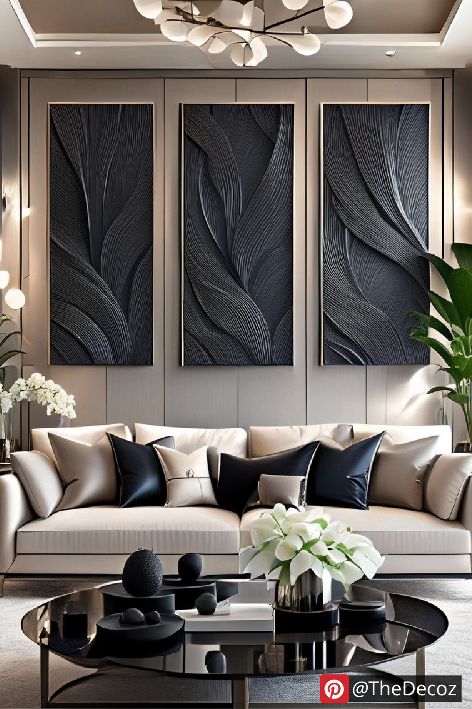
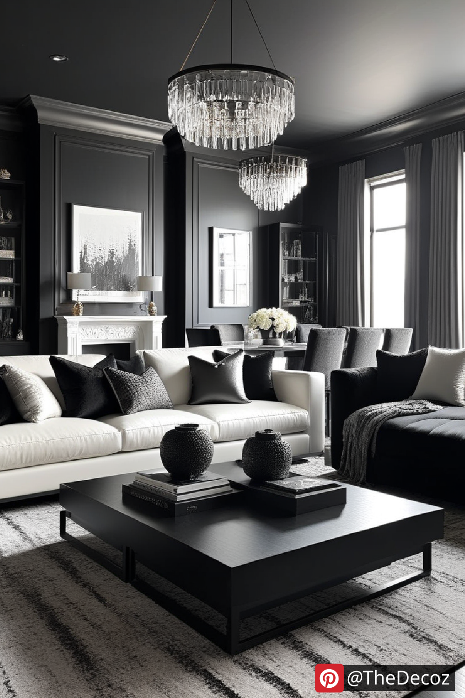

When it comes to interior design, few color schemes are as timeless and versatile as black and white. This classic combination not only exudes elegance but also offers a canvas for creativity and personalization. In this article, we will explore the various aspects of black and white living room decor, providing you with innovative ideas and practical tips to transform your space into a stylish haven.
Black and white living room decor is more than just a color choice; it’s a statement. This monochromatic palette can create a sense of sophistication and calm, making it ideal for any living space. The contrast between the two colors can highlight architectural features, create depth, and enhance the overall aesthetic of your room. Whether you prefer a minimalist approach or a more eclectic style, black and white decor can be adapted to suit your taste.
Choosing the right furniture is crucial in establishing the foundation of your black and white living room. Opt for pieces that complement the color scheme while also providing comfort and functionality. Here are some ideas:
Sofas and Chairs: A sleek black leather sofa can serve as a striking centerpiece, while white accent chairs can add a touch of brightness. Consider mixing textures, such as a velvet black couch paired with linen white chairs, to create visual interest.
Coffee Tables: A glass coffee table with a black metal frame can seamlessly blend into the decor, allowing the room to feel open and airy. Alternatively, a white marble table can add a touch of luxury.
The walls of your living room are a blank canvas waiting to be transformed. Here are some options to consider:
Paint: A fresh coat of paint can dramatically change the look of your space. Consider painting one wall black to create a bold accent, while keeping the others white for balance.
Wallpaper: For those looking to add texture or patterns, black and white wallpaper can be a fantastic choice. Geometric designs or floral patterns can add depth and character to your living room.
Textiles play a significant role in adding warmth and comfort to your living room. Here are some ideas for incorporating textiles into your black and white decor:
Cushions and Throws: Mix and match black and white cushions with various patterns and textures. A chunky knit throw in black can add coziness, while a patterned cushion can serve as a focal point.
Rugs: A black and white area rug can anchor your living room and tie the decor together. Look for bold patterns or stripes to add visual interest.
Art is an essential element in any living room, and black and white decor provides a perfect backdrop for showcasing your favorite pieces. Here are some suggestions:
Framed Art: Black and white photography or abstract art can create a striking visual impact. Consider a gallery wall with a mix of frames to add personality.
Decorative Objects: Incorporate black and white vases, sculptures, or books to enhance the decor. These small touches can add layers and depth to your living room.
Lighting is a crucial aspect of any living room, and it can dramatically affect the ambiance of your black and white decor. Consider the following options:
Statement Lighting: A bold black chandelier or a sleek white pendant light can serve as a focal point in your living room. Look for designs that complement your overall decor style.
Accent Lighting: Use floor lamps or table lamps with black or white shades to create a warm and inviting atmosphere. Adjustable lighting can help set the mood for different occasions.
Black and white living room decor is a timeless choice that offers endless possibilities for creativity and personalization. By carefully selecting furniture, wall treatments, textiles, and art, you can create a space that reflects your style while remaining elegant and sophisticated. Whether you prefer a minimalist aesthetic or a more eclectic approach, the key is to find the right balance between the two colors. Embrace the allure of black and white, and transform your living room into a stunning sanctuary that you and your guests will love.
With these tips and ideas, you are well on your way to mastering the art of black and white living room decor. Happy decorating!
    